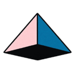
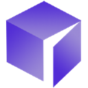

AI agents for security engineers (2026)
Pentest agents, guardrails, identity and sandboxing tools for securing apps and the agents that touch them. We picked the top tools for 5 jobs security engineers do every day: 26 tools in all, 25 of them free or with a free tier.
Jump to
- Security testing
- Agent security and guardrails
- Smart contract security
- Agent identity and logins
- Sandboxes
Free tools from AgentScout for security engineers: Agent setup generator (guardrail rules in CLAUDE.md, AGENTS.md)
How we picked: each section takes the tools matched to that task in our directory, putting tools whose category and stated use cases fit the task first, then ordering by tracked GitHub stars. No paid placements.
Security testing
Agents that probe your app, code and smart contracts the way an attacker would: running penetration tests, red-teaming AI systems and flagging vulnerabilities with suggested fixes. All 52 tools →
- Strix Open source + cloud
Open-source AI agents that run penetration tests on your app to find and help fix security vulnerabilities. · ★ 72,841 - PentAGI Open source
Autonomous multi-agent system for running penetration testing tasks. · ★ 32,771  Hexstrike AI Open source + cloud
Hexstrike AI Open source + cloud
HexStrike AI MCP Agents is an advanced MCP server that lets AI agents (Claude, GPT, Copilot, etc.) autonomously run 150+ cybersecurity tools for automated pentesting, vulnerability discovery, bug. · ★ 13,200- AI-Infra-Guard Open source
Tencent's AI red-teaming platform that scans agents, skills and MCP servers for risks. · ★ 7,226 
Superagent Open source + cloud
SDK for AI agent safety that blocks prompt injections and unsafe tool calls, redacts PII and secrets, and runs red-team scenarios. · ★ 6,779- Agentic Bug Hunter Open source
Agentic Bug Hunter is an open-source AI bug-bounty toolkit that pairs with Claude and other agents to hunt vulnerabilities across targets. · ★ 5,648
Agent security and guardrails
Guardrails, policies and monitoring that keep agents from doing what they shouldn't. All 126 tools →
- Strix Open source + cloud
Open-source AI agents that run penetration tests on your app to find and help fix security vulnerabilities. · ★ 72,841 - LiteLLM Open source + cloud
Open-source AI gateway and Python SDK that calls 100+ LLM providers in the OpenAI format, with cost tracking, guardrails, load balancing and logging. · ★ 62,372 - Kong Gateway Open source + cloud
Cloud-native API, LLM and MCP gateway that adds routing, auth, multi-LLM support, semantic security and MCP traffic analytics through plugins. · ★ 44,328 - PentAGI Open source
Autonomous multi-agent system for running penetration testing tasks. · ★ 32,771 
Casdoor Open source
Agent-first identity and access management with an MCP and agent gateway. · ★ 14,715- Portkey AI Gateway Freemium
Fast open-source AI gateway that routes requests to hundreds of LLMs through one API with fallbacks, load balancing and built-in guardrails. · ★ 13,291
Smart contract security
AI auditors and agents that review smart contracts for exploitable bugs before and after deployment, plus tools that help build and check Web3 code. All 10 tools →
- Contracts Wizard Open source
Contracts Wizard is an MCP server that gives agents a way to handle interactive smart contract generator based on OpenZeppelin Contracts. · ★ 296 - OpenZeppelin MCP Open source
OpenZeppelin's official MCP servers that let agents generate secure smart contracts from audited OpenZeppelin libraries for Solidity, Cairo, Stellar and more. · ★ 30 - Almanax See site
AI security engineer that finds vulnerabilities in applications and smart contracts and reviews pull requests; acquired by depthfirst (June 2026). - ChainGPT Freemium
Suite of crypto AI tools: chatbot, smart-contract generator and auditor. - De.Fi Scanner Freemium
Smart-contract and token scanner that flags honeypots, owner powers and other contract risks, with a credit-based API for apps and agents. - Grisoco AI security audits See site
Smart-contract security audits for EVM chains and DAML: quote, run and fetch reports.
Agent identity and logins
Identity, auth and credential tools that let agents sign in to apps, prove who they act for and use secrets without ever seeing the raw passwords or keys. All 49 tools →
- Kong Gateway Open source + cloud
Cloud-native API, LLM and MCP gateway that adds routing, auth, multi-LLM support, semantic security and MCP traffic analytics through plugins. · ★ 44,328 - Composio Freemium
Tool integrations and auth for agents across hundreds of apps. · ★ 30,828 - Casdoor Open source
Agent-first identity and access management with an MCP and agent gateway. · ★ 14,715 - Nango Freemium
Integration platform that connects products and AI agents to 1,000+ APIs with managed auth, syncs and tool calls. · ★ 13,048 - Tyk Gateway Open source + cloud
Cloud-native API and AI gateway supporting REST, GraphQL, gRPC and MCP, with rate limiting, auth and analytics. · ★ 10,870 - Bindu Open source
Identity, communication and payments layer that lets AI agents talk to and pay each other. · ★ 10,022
Sandboxes
Sandboxes that let agents run code and tools in isolation, away from your machine and data. All 125 tools →
- NVIDIA OpenShell Open source
Sandboxed runtime for autonomous agents with declarative YAML policies on file, network and credential access. · ★ 20,733 - OpenSandbox Open source
Secure, fast sandbox runtime for AI agents to run code. · ★ 16,293 - E2B Open source + cloud
Secure cloud sandboxes for running agent-generated code. · ★ 14,618 - CubeSandbox Open source
Lightweight, concurrent sandbox for running AI agent code securely. · ★ 13,107 - microsandbox Open source
Local-first microVM runtime for running untrusted agent code safely. · ★ 8,871 - smolvm Open source
Portable, branchable virtual machine for running agents safely on your computer. · ★ 6,882
Popular searches for security engineers
Sandboxes for AI agents to run code
Other roles
- Developers
- AI engineers
- Marketers
- Sales teams
- Customer support teams
- Designers
- Artists
- Photographers
- Filmmakers
- Video editors
- Musicians and producers
- Researchers
- Data analysts
- Crypto traders
- Founders and small businesses
- DevOps and SRE engineers
- Game developers
- Content creators
- QA engineers
- Data engineers
- Product managers
- Students
- Operations teams
- Startup CTOs
- Agencies
- Open-source maintainers
- MCP developers
- Automation engineers
- E-commerce teams
- All roles
Best-of lists for security engineers
Related categories
Facts come from our directory listings; pricing is as each maker states it and can change. Missing a tool? Submit it free.